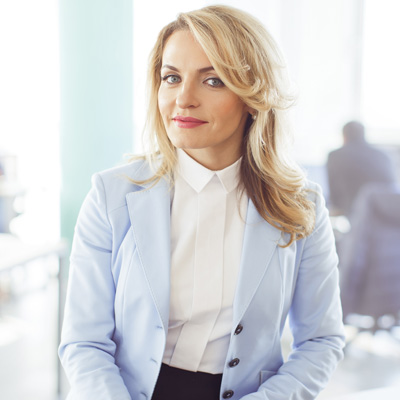

Cпікери

Засновник проекту
Олена Бабич
Олена Бабич
- Займається юридичною практикою з 1999 року. Серед компетенцій Олени - супровід господарської діяльності підприємств, а також представництво клієнтів у господарських, цивільних, трудових і сімейних спорах.
- Починаючи з 2003 року спеціалізується також у сфері медичного права. Як експерт в галузі медичного права пані Бабич консультує провідні медичні установи різного профілю, в тому числі з питань господарського, трудового права та має значний досвід у побудові ефективної моделі правового забезпечення внутрішніх бізнес-процесів медичних закладів.
- Cудова практика у так званих «медичних справах» є однією з найбільших серед українських юристів. Це справи щодо відшкодування матеріальної та моральної шкоди внаслідок надання медичних послуг неналежної якості, захисту інтересів лікувальних установ у трудових спорах, захисту честі, гідності і ділової репутації медичних працівників.
- У квітні 2017 року дослідження «Вибір клієнта. ТОП 100 найкращих юристів України - 2017» відзначило Олену Бабич серед лідерів практики «медичне право / фармацевтика».
- З 2011 року Олена Бабич є співорганізатором щорічної конференції у сфері менеджменту в медицині «Медичний заклад: організація та управління».
- У 2017 році організувала перший Legal Medical Forum – спеціалізований захід, присвячений юридичним питанням у галузі медицини, який зібрав власників, головних лікарів медичних закладів та юристів, які практикують у медичному праві.
- Є постійним автором публікацій у провідних національних виданнях з правових питань, а також постійно бере участь в якості доповідача, експерта у різноманітних заходах. Бере активну участь у розробці законопроектів та підзаконних нормативно-правових актів у сфері охорони здоров’я.
- З 2009 року Олена Бабич стала відома телеглядачам як адвокат телепроектів «Судові справи. Злочин і кара», а з 2011 року «Сімейний суд» на телеканалі «Інтер». З 2017 року – ведуча «Юридичної консультації» «Громадської приймальні» на телеканалі «Київ».
Підписка на новини
Бажаєте отримувати новини про майбутні заходи?
Ви успішно підписались на новини!